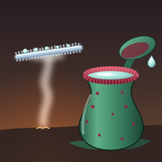

DewpitchDewpitch Support
Draw cold lines. Turn steam into rain.
Contact
Write to lamnv260398@gmail.com. Please say which device you play on and, if it is about a level, its number (for example II·07).
How to play
Draw lines of rime with your finger: each line drops like a solid thing and rests where it lands. Tap a vent or a spring to open it. Steam rises, and where it touches a line it beads into drops that run to the line's low end and fall from its tip. Water that lands on a hot stone boils back into steam. Fill every pitcher plant to its mark at the same time to finish the level.
Undo removes your last line until the first source opens; Restart works at any time. Hint shows a faint reference line for the level. Refill pours every source once more and keeps your lines. You start with two of each and earn more on the first clear of levels 5, 10 and 15 in each chapter.
Purchases
Chapter I (15 levels) is free. One purchase, The whole highlands ($3.99 in the US; prices elsewhere are set by the App Store), opens Chapters II to IV and makes Hint and Refill unlimited. You buy it once and it does not expire. Bought something before, or on another device with the same store account? Open Settings → Restore purchases. Refunds are handled by Apple at reportaproblem.apple.com.
Progress
Progress is saved on the device only. It is not synced between devices, and it is removed if you delete the app. There is no account and no data held anywhere else, so there is nothing to ask us to delete.